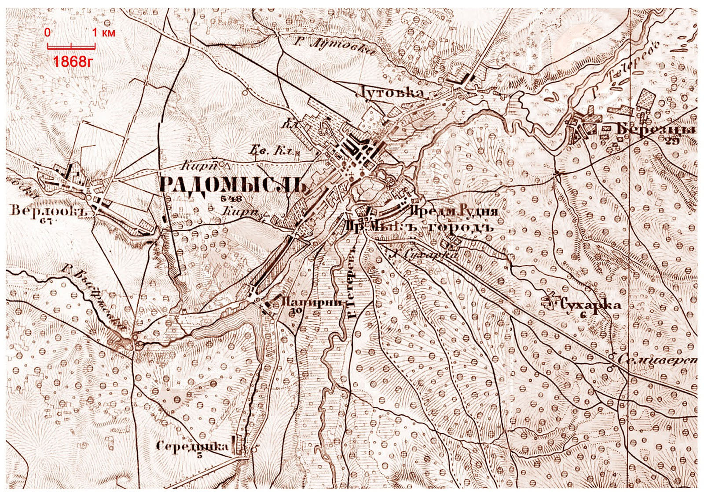
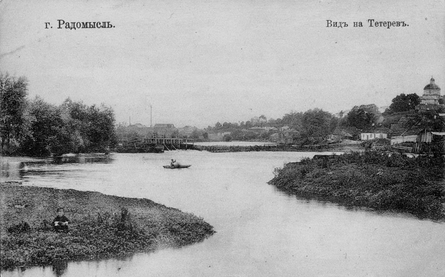

Радомисль та околиці на топографічній карті 1868 року
У 1845 році було розпочато укладання «Військово-топографічної карти західної частини Російської імперії» в масштабі: 1 дюйм = 3 версти (відома як «триверстка»), в сучасних одиницях цей масштаб можна відобразити як 1см = 1260 м. Карта виконана дуже детально. На ній показані населені пункти в планах; позначені дороги, кургани, чагарники, ліси, болота, струмки, окремі будови, мости, переправи, млини та інші об’єкти.
Оригінал карти надруковано на жовтуватих аркушах чорною фарбою. Розмір аркуша 23х16,5 дюймів (58,42х41,91см). У період з 1846 по 1863 рік було складено й награвіровано 435 аркушів триверстки. До кінця XIX століття військова топографічна карта нараховувала вже більше 600 аркушів (це 146 квадратних метрів, прим. авт.). Вона вражає обсягом проробленої роботи й високою точністю, завдяки чому використовувалася тривалий час і навіть перевидавалася в перші роки після революції 1917 року.
Мені пощастило натрапити в Інтернеті на це грандіозне творіння. Виконати таку масштабну й точну роботу з землі, без аерокосмічних зйомок і сучасних приладів, було справді непросто й вимагало глибоких знань та вправності.
Мене зацікавили аркуші 22–7 та 22–8 карти. На них можна побачити, яким був Радомишль та прилеглі території 150 років тому. Тож я спробую перевести графічні зображення карти в словесний опис.

Суміщена карта з фрагментів аркушів 22–7 та 22–8 триверстки
В середині XIX століття Радомисль у своїй окрузі був найбільшим містечком. На карті 1868 року позначено 548 дворів; Коростишів мав 394, Малин — 203(!). У наш час усе стало навпаки. Кількість населення цих міст станом на 1 березня 2011 р. становила: Радомишль — 15,3 тис. осіб, Коростишів — 24,2 тис. осіб, Малин — 26,3 тис. осіб.
Найбільшими селами на той час, які налічували більше 100 дворів (якщо взяти сучасні межі радомишльського району), були: Забілоччя — 223 (!) двори, Вишевичі — 164, Веприн — 132, Межирічка — 130, Борщів — 120, Кочерів — 106, Котівка — 104. Потіївка мала лише 74 двори. Нині це найбільший у районі після Радомишля населений пункт — 2,1 тис. осіб.
В середині XIX століття село Мініно та Ставки були окремими селами. Зараз це одне село — Леніно. Сьогоднішня географічна назва місцевості «Серединка» на перетині дороги Радомишль — Кичкирі та річки Мика, як видно на карті, походить від назви хуторочка з п’яти дворів; нині це частина села Кичкирі. Сіл Глухів-1, Глухів-2, Поташня взагалі не існувало.
На карті позначено нову дорогу Житомир — Київ через Коростишів, збудовану в середині XIX століття, яку називали Брест-Литовським поштовим трактом. Раніше шлях з Житомира до Києва пролягав через Студеницю та Кичкирі, далі через Радомисль, Забілоччя і Рожів. Зміна маршруту, можливо, уповільнила розвиток Радомисля, натомість сприяючи швидшому зростанню Коростишева.
Дорога до Потіївки на той час ще не існувала. Натомість на карті позначено шлях до Чоповичів, який тепер зник; тоді він починався з місця, де зараз розташована вулиця Микульського.
До речі, Чоповичі тоді мали 610 дворів (більше, ніж Радомисль), а місто Коростень (Іскорость) було невеликим населеним пунктом із 97 дворами. Станом на 1 березня 2011 року населення Коростеня становило 65,5 тис. осіб, Чоповичів — 2,2 тис.
Ліси 150 років тому займали значну частину краю. Майже суцільно вони покривали територію на схід в сторону Києва, на північ в напрямку Малина і на північний-захід, в напрямку Чоповичі-Коростень. Біля Радомисля лісом була покрита територія від папірянського кладовища до Верлока. Вільна від лісів земля лугувала. Сільськогосподарські насадження проводили на городах, які були поблизу будинків та займали великі площі; щільність між будинками в місті та селах була низька.
Водні ресурси краю в ті часи були значно більшими за сучасні, що імовірно, пояснюється іншими кліматичними умовами. Русло Тетерева тоді проходило під самісінькою Руднею з північного боку. Озеро, що залишилося від усла, засипали у 80-х роках минулого століття. На його місці зараз розташована СТО «Мийка». Річка ж Мика текла по сучасному руслу Тетерева і впадала до нього приблизно за 300 метрів від теперішнього головного мосту. З цього стає зрозумілим, чому в історичних документах Радомисль згадується як місто, розташоване на лівому березі Мики, а не Тетерева.
Ці дві річки тоді були повноводними — це видно за мережею проток, що з’єднували їх між собою ще до головної точки злиття. На карті позначений хутір Сухарка (нині топонім Другий хутір). Через нього, тепер між двома вулицями, протікає невеличкий рівчачок, що губиться десь на лузі. У давні часи це була річка Сухарка, яка через систему озер впадала в річку Тетерів.
На території Радомисля позначені два водяні млини. Один із них — загальновідомий, на Папірні, на річці Мика. Він досить довго працював: десь наприкінці 60-х минулого століття я пам’ятаю, як вода крутила величезне колесо. Другий млин позначений у місці, де раніше зливалися головні річки. Від Рудні через його мости проходить дорога, яка замість Русанівської вулиці повертає ліворуч, веде до Свято-Троїцької церкви й далі, у районі «Каплички», виходить на початок теперішньої вулиці Чкалова.

Радомисль. Листівка друкарні Е. Заєздного, початок XX століття
Ця конфігурація дороги існувала ще на початку XX століття, що добре видно на листівці Е. Заєздного. Головний же в’їзд у місто в ті часи проходив мостами через р. Сухарка (в районі о. Прірва) на Рудню, далі через р. Тетерів на Микгород, а потім через р. Мику на вулицю, що сьогодні має символічну назву Старокиївська.
У центрі міста на карті позначені, крім уже згаданої Свято-Троїцької церкви, Римо-Католицький костел та недобудований кафедральний собор. Зараз на його місці знаходиться стара водонапірна вежа.
Тогочасне місто було набагато меншим. На карті видно вулиці (сучасні назви): 9 Січня, Чорнобильська. За ними, між с. Лутівкою, розкинувся сад. Вулиці Русанівська, Горького, Присутственна закінчуються на нинішньому перетині вул. Покровського. Це північно-західна межа міста, а за нею розташовані городи, що доходили до сучасної вулиці Івана Франка.
Вул. Шевченка тоді не існувало. Межа міста проходила по вул. Малій Житомирській, яка закінчувалася в районі будинку нарсуду. Далі, до р. Черчі, розташовувалися городи.
Найдовша вулиця Радомишля була і є Велика Житомирська, яка закінчується біля млина. Від р. Черчі до млина забудована одна її сторона, а на протилежному боці, у напрямку р. Мики, розташовані городи. На Рудні вирізняється одна велика вулиця — теперішня її назва Шкідченка, раніше — Жданова, а в давнину — Руднянська. Це найдавніша вулиця цього району.
На карті позначено цвинтарі єврейської та польської громад, які на тоді знаходилися за межами міста. Також позначено два цегельні заводи: один — між комбікормовим заводом і р. Черча, другий — у кінці вулиці Кірова, що працював ще в 70-х роках минулого століття. На Микгороді, у районі сучасної меліорації, був постоялий двір. Ще один знаходився на шляху до Чоповичів, за 3 км від центру міста.
Отже, це все, що я дізнався про Радомисль тих часів за допомогою цієї військово-топографічної карти, створеної понад 150 років тому. Вона не лише зберегла географічну картину того часу, а й дає змогу зрозуміти зміни, які відбулися з розвитком міста.